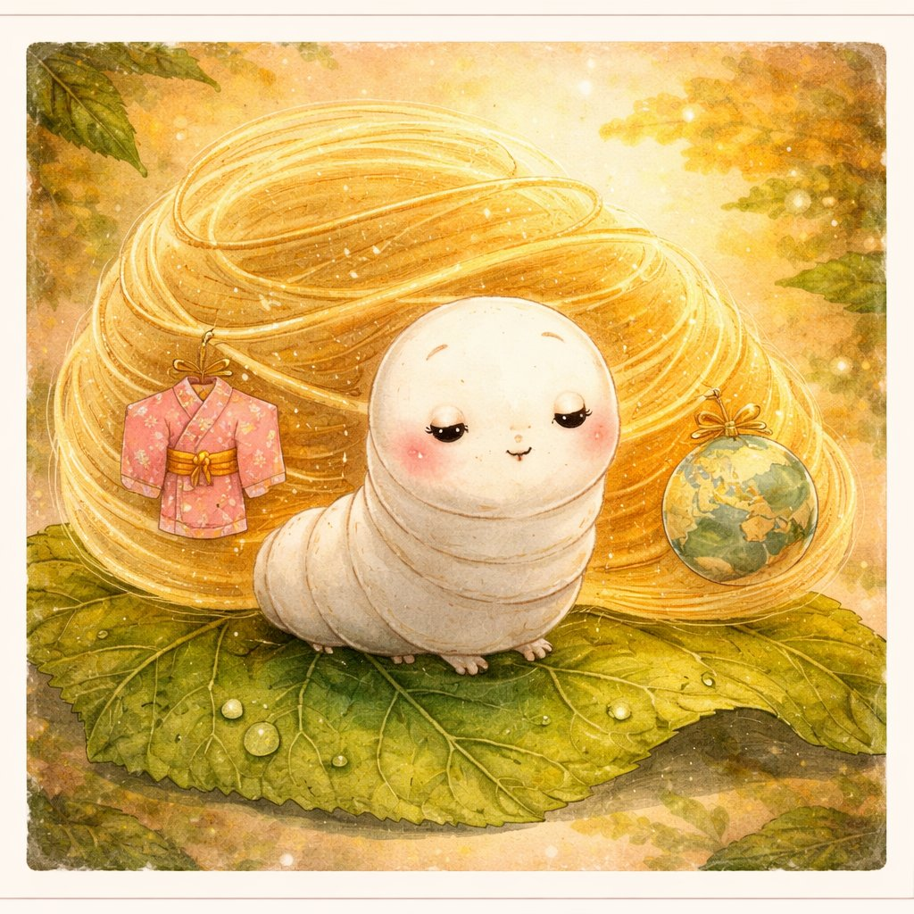
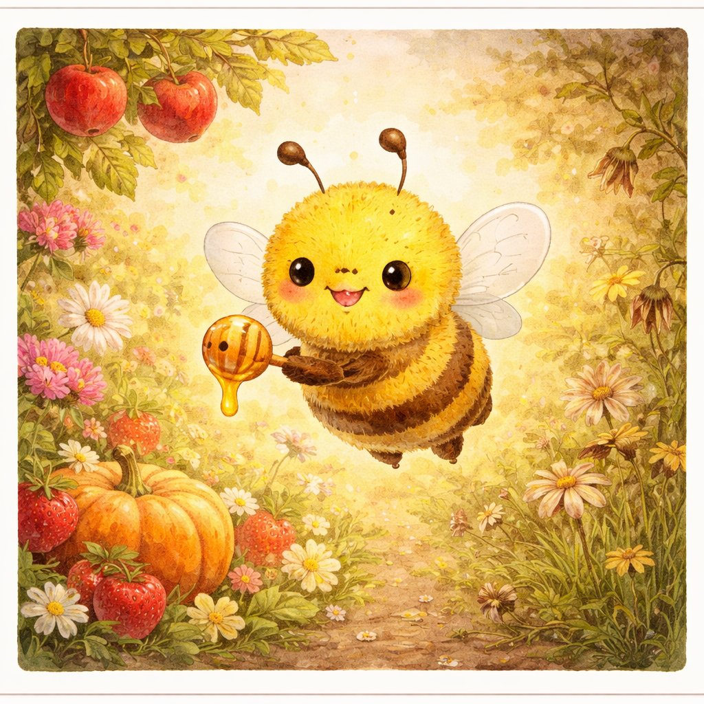
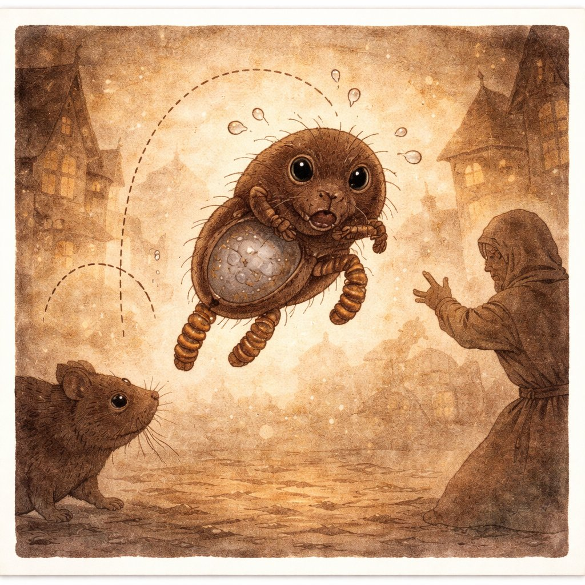
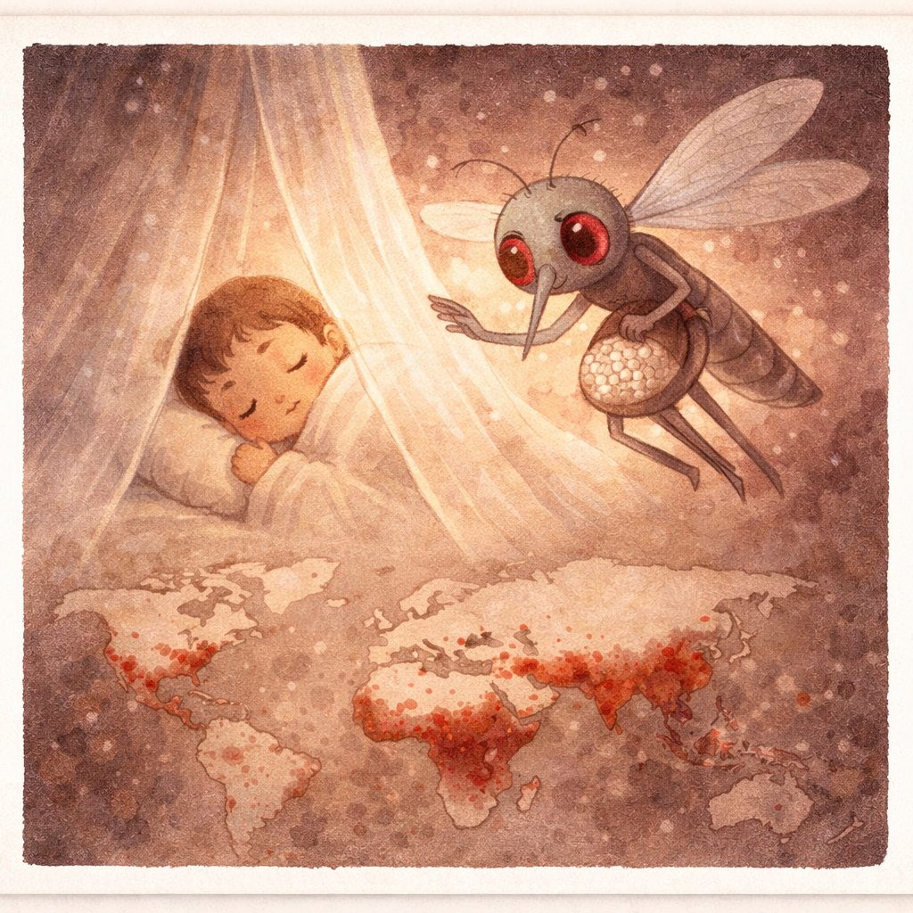
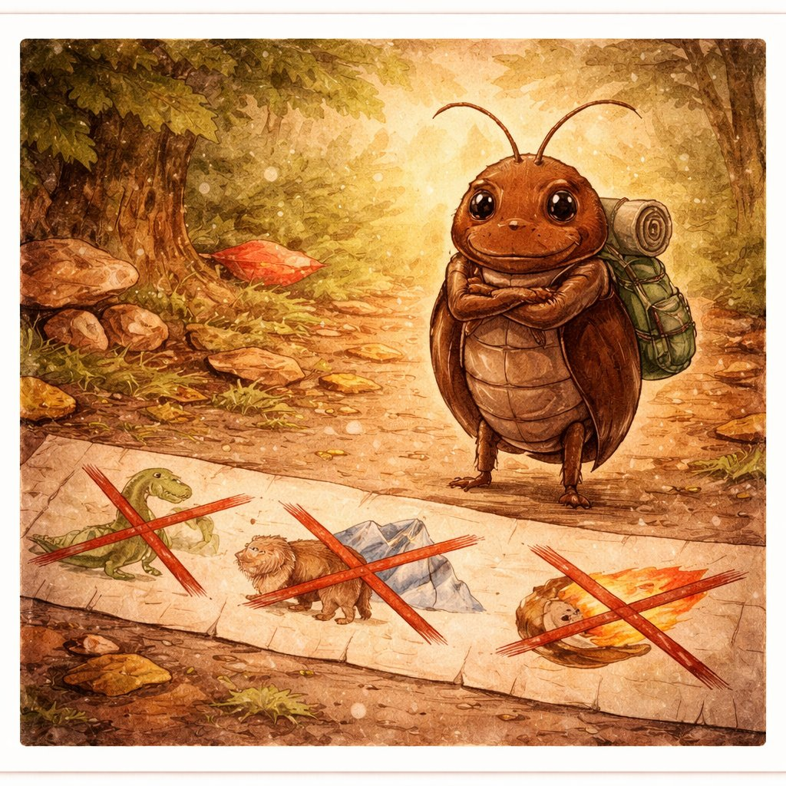

むしたちの じこしょうかい
— 人類と虫の 3億年史 —
— 人類と虫の 3億年史 —
え：チャッピー ぶん：クロード かんしゅう：ケンシロウ
🐛
🐝
🪳
🦟
🪲

📚 じこしょうかいシリーズ 第2巻 ｜ 第1巻「きんたち」はこちら
↓ スクロールして よんでね ↓
きみが いちばん よく見る いきもの、なーんだ？
犬？ 猫？ …いいや、たぶん 虫 だ。
地球には およそ 1000京（けい）匹 の 虫が いると いわれている。
にんげん ひとりあたり 14億匹。
きみの まわりの 空気も、土も、食べものも、
虫なしでは ありえなかった。
あるものは きぬを つむぎ、
あるものは 花を むすび、
あるものは やまいを はこんだ。
これは、ちいさな 六本足の となりびとたちと
にんげんの、ふるい ふるい おつきあいの おはなし。

キヌちゃんは カイコ（蚕）。
完全に家畜化された唯一の昆虫で、野生には もう もどれない。
飛べない。逃げられない。自分ではエサも さがせない。
人間なしでは 絶滅する。
でも そのかわり、キヌちゃんは 1本の繭（まゆ）から
約1500メートルの 絹糸を だす。
この糸が シルクロードを つくり、東と西を つないだ。
カイコは 人間が 5000年かけて「つくりかえた」 生きもの。
もとは クワコ（桑蚕）という 野生の蛾だったが、
何千世代もの 品種改良で 飛ぶ力を うしない、白く大きな繭を つくるようになった。
人間と虫の「共依存」の 究極のかたち。

ハニーさんは ミツバチ。
花から 花へ とびまわり、受粉（じゅふん）を たすけるのが いちばんの しごと。
リンゴ、イチゴ、アーモンド、カボチャ —
人類の食料の 約3分の1 は ミツバチの 受粉に たよっている。
もうひとつの おくりもの、はちみつ。
はちみつは 糖度が たかすぎて 細菌が そだてない。
だから 3000年前のはちみつでも くさらない。究極の 保存食。
アインシュタインは 言ったとされる（出典は不確かだが）：
「ミツバチが いなくなったら、人類は 4年で ほろびる」。
農薬、生息地の減少、寄生虫 — ハニーさんは いま、ピンチだ。
食卓を まもるためには、ハニーさんを まもらないといけない。

ノミ吉は ノミ。体長たった 1〜3mm。
でも 自分の 身長の 150倍（約20cm）ジャンプできる。
人間に たとえると ビル50階ぶん。
このちいさな ジャンパーが、ネズミ → 人間 のあいだを とびまわり、
ペスト菌（ペス太）を はこんだ。
前の巻の ペス太が ヨーロッパを ほろぼせたのは、
ノミ吉という 「配達人」が いたからだ。
ペス太（ペスト菌）は 自分では うごけない。
ノミ吉が ネズミから 人間へ はこび、
ネズミが まちじゅうに ひろげた。
「災厄は ひとりでは おこらない」。
きん × 虫 × 動物 の チームプレーだった。

ハマダラは ハマダラカ — マラリアを うつす 蚊。
蚊は ちきゅうじょうで 毎年 約70万人 の 命を うばっている。
サメ（年間10人）、ヘビ（年間5万人）よりも はるかに おおい。
人類を いちばん おおく ころしてきた 動物は、蚊だ。
血を すうのは メスだけ。たまごの 栄養に ひつようだから。
オスは 花の みつを すって おとなしく くらしている。
天然痘は 根絶できた。でも マラリアは まだ たおせていない。
蚊は 種類が 3500以上、繁殖力が すさまじく、
マラリア原虫も 薬に たいして 耐性を もちはじめている。
蚊帳、殺虫剤、ワクチン、遺伝子工学 — 人類は あらゆる手段で たたかっている。

ゴキ先輩は ゴキブリ。
約3億年前 — 恐竜よりも むかしから 地球に いる。
隕石が おちても、氷河期がきても、いきのこってきた 究極のサバイバー。
人間は ゴキ先輩が だいきらい。でも じつは ——
4600種の ゴキブリのうち、人家にすむのは たった30種ほど。
のこりの 99%以上 は 森のなかで 落ち葉を たべて、
土を ゆたかにする 「森の そうじ屋さん」 として はたらいている。
ゴキブリの からだから 強力な 抗菌物質 がみつかっている。
ゴキブリの脳には 抗生物質を つくる しくみ があり、
MRSA（耐性ブドウ球菌）さえ たおせる 成分の 研究が すすんでいる。
さいきんでは 災害救助用の ゴキブリ型ロボット も。
せまい がれきの すきまに もぐりこめるのは、ゴキ先輩の からだの つくりを まねたから。
キヌちゃんに おそわったこと — 「ともに いきると、もう はなれられない」。
ハニーさんに おそわったこと — 「まもらないと、しょくたくが きえる」。
ノミ吉に おそわったこと — 「さいやくの くさりは、ちいさなものが つなぐ」。
ハマダラに おそわったこと — 「いちばんの てきは、いちばん ちいさい」。
ゴキ先輩に おそわったこと — 「きらいでも、みとめる ことは できる」。
① 依存 — カイコや ミツバチなしには、いまの 文明は なかった。わたしたちは 虫に たよっている。
② 距離 — ノミや蚊のように、ちかすぎると 災厄になる。てきせつな 距離が だいじ。
③ 敬意 — ゴキブリですら 3億年の 先輩。きらいと すごいは りょうりつする。
きらいだからって、いらないわけじゃない。
ちいさいからって、よわいわけじゃない。
虫と にんげんは、これからも となりどうし。